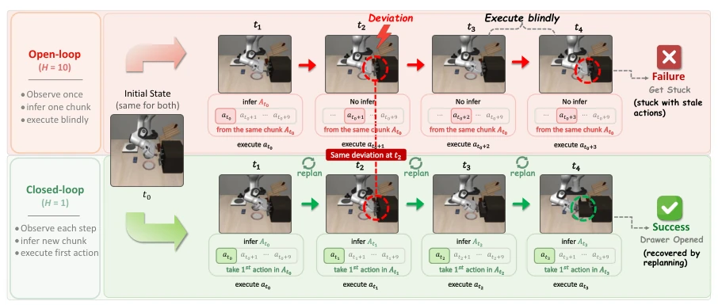
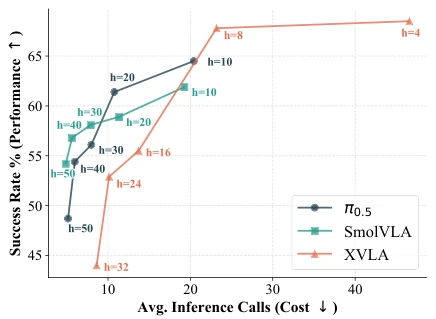
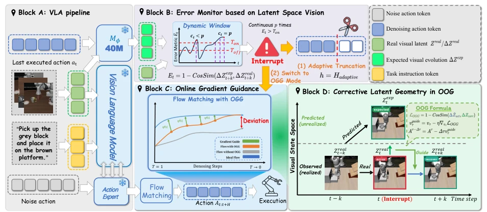
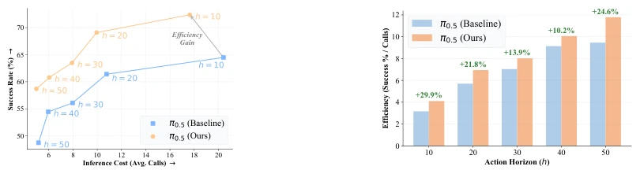
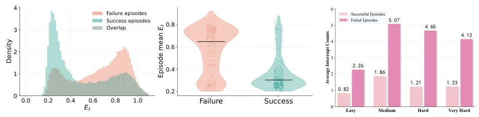
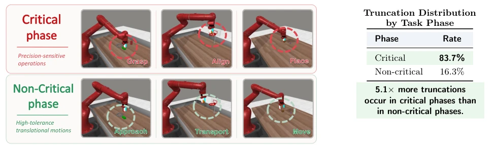
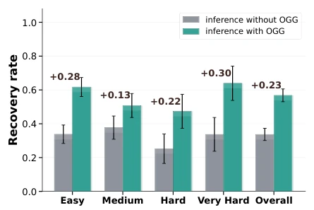
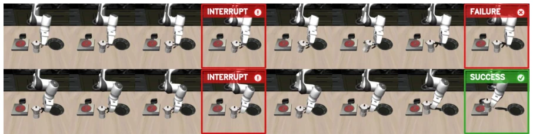
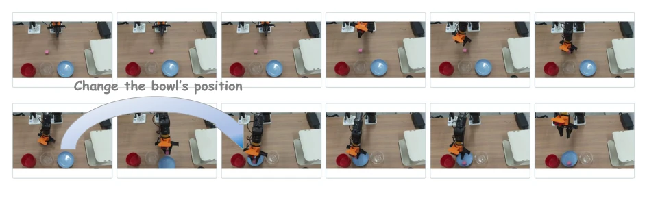
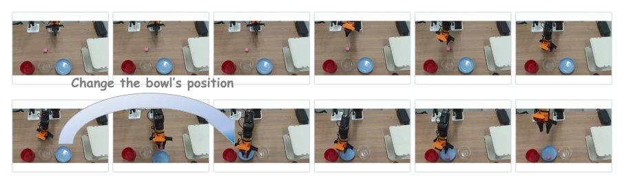

This paper adds an "external module" to Action Chunk VLA models, attempting to solve the "blind execution" problem in long-horizon execution without open-source retraining. The idea is quite clever, using a lightweight LVM to monitor the visual latent space, truncating and performing gradient correction if something goes wrong. But honestly, this move is somewhat like "mending the fold after sheep are lost"; although better than bearing it hard, the LVM itself is also a black box, and if monitoring signals are inaccurate, OGG's gradient guidance might lead the robot into a ditch. Moreover, relying on demonstration data to train the external module, does this count as indirectly increasing training costs? However, being able to adaptively adjust the horizon during inference does alleviate the awkwardness of a fixed horizon, counting as adding a fuse to VLA robustness, with acceptable cost-performance ratio, especially suitable for long tasks. Its core contribution lies in decoupling monitoring and policy, making the correction module pluggable, but in actual deployment, it needs to consider whether the LVM's computational overhead is worth it.
Existing VLA strategies often adopt the Action Chunking mechanism, predicting multiple future steps of actions at once to improve efficiency, but this creates an "Open-loop blind spot". As shown in Figure 1, once a disturbance occurs during execution, the robot will still blindly execute remaining actions, leading to error accumulation or even task failure. Figure 2 quantifies this trade-off: short horizon (H=1) is robust but has high inference frequency, long horizon (H=10) is efficient but has low success rate. Existing work struggles to achieve closed-loop reaction while maintaining chunking efficiency, and fixed horizon cannot adapt to different task difficulties or environmental dynamics. As cited in literature [Wang et al., 2026b], error accumulation may cause the robot to enter out-of-distribution states, making subsequent replanning unable to recover. Therefore, there is an urgent need for a mechanism that can dynamically perceive deviations and intervene, balancing efficiency and robustness, avoiding large failures due to small errors under long horizons.

Figure 1 Open-loop vs. Closed-loop execution. The top row (H = 10) illustrates how blindly executing long action chunks leads to compounding errors, causing the robot to get stuck during a drawer-opening task. In contrast, the bottom row (H = 1) demonstrates strict closed-loop execution, which maintains environmental reactivity and yields a smooth, successful manipulation.

Figure 2 Performance–efficiency trade-off across fixed action horizons. Smaller horizon achieves higher suc- cess rates, while larger horizon preserves the chunking efficiency.
VLA-Corrector is a lightweight correction framework at inference time, the core lies in not modifying VLA backbone weights, but adding external monitoring and correction modules. The overall process is divided into four steps: First, train the external latent dynamic corrector M_phi, using frozen VLA visual encoder to extract features, predict latent space residual evolution caused by actions, rather than absolute state, thereby focusing on task-relevant dynamics. Second, introduce LVM (Latent-space Vision Monitor), continuously comparing predicted latent evolution with actual observations during inference, calculating inconsistency score Et. If Et continuously exceeds dynamic threshold Ton, trigger truncation event, discard remaining actions of current block, achieving adaptive horizon. Finally, trigger OGG (Online Gradient Guidance), during replanning use latent dynamic difference between expectation and observation to calculate gradient, inject into Flow Matching velocity field, guiding actions to correct towards recovery trajectory. This mechanism converts fixed horizon to adaptive horizon, only shortens horizon and corrects during drift, no retraining needed, and compatible with different VLA architectures.

Figure 3 Overview of VLA-Corrector. Starting from a standard chunked VLA pipeline (A), we add a Latent-space Vision Monitor (LVM) that detects persistent execution drift and triggers an interrupt event (B). The event truncates stale actions and switches the next replan from normal flow matching to OGG-guided flow matching (C). OGG uses the expected and observed latent evolution to guide the replan back toward a recoverable trajectory (D).
Validated on MetaWorld, LIBERO, and real AgileX PiPER robot. Baselines include π0.5, SmolVLA, X-VLA. Metrics cover success rate, inference call count, and success rate per call. Results show VLA-Corrector significantly improved success rate under long horizon, e.g., π0.5 on MetaWorld average improvement 15.65 percentage points, and efficiency per call improved up to 29.9%. Ablation experiments show that truncation alone or OGG alone are less effective than their combination. LVM analysis shows truncation mostly occurs at critical phases (83.7%). In real experiments, improvement in disturbance recovery was largest (+28.3%), proving it effectively handles unexpected interference during execution, and no need to retrain VLA backbone. LIBERO experiments also show it can compensate for deficiencies in few-shot fine-tuning, even surpassing full fine-tuning baseline, proving its sample efficiency advantage.

Figure 4 Performance–efficiency analysis on π0.5. Left: performance–efficiency trade-off across action horizons. Right: success-per-call efficiency. VLA-Corrector improves success rate across action horizons and yields consistent efficiency gains.

Figure 5 LVM detection analysis. Left: distribution of the inconsistency score Et, where successful episodes concentrate at low values and failed episodes show a heavier high-score tail. Right: interrupt frequency, where failed episodes trigger more interrupt events than successful ones.

Figure 6 Task-phase analysis of LVM-triggered truncation. We manually divide MetaWorld trajectories into critical and non-critical phases. Left: representative trajectories show that truncation is triggered much more frequently during critical phases. Right: 83.7% of truncations occur in critical phases, while only 16.3% occur in non-critical phases.

Figure 7 Post-interrupt recovery. OGG-guided inference consistently outperforms standard inference.

Figure 8 Controlled recovery case. Given the same initial state and detected grasping error, the monitored baseline continues the original chunk and fails (top), while VLA-Corrector truncates stale actions, replans with OGG, and completes the task (bottom).

Figure 9 Real-world disturbance recovery demo. A human shifts the blue bowl during execution, requiring the robot to recover from an outdated action chunk.

Figure 11 Demo: Moving-placement target. The robot picks up the cube and places it into the blue bowl, while a human manually changes the bowl’s position during the process.